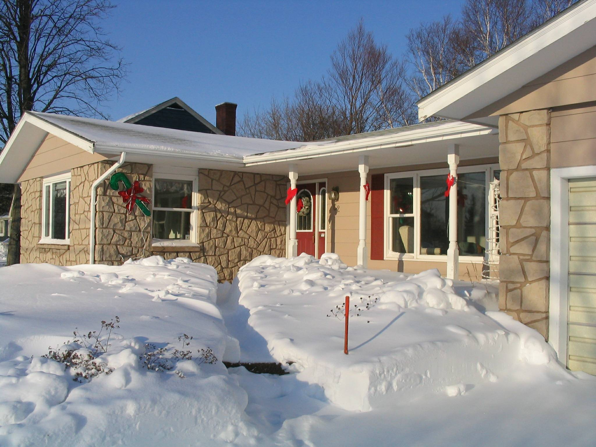
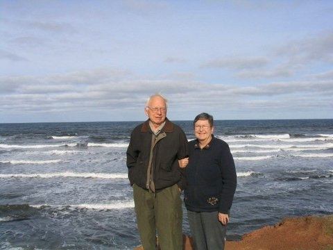
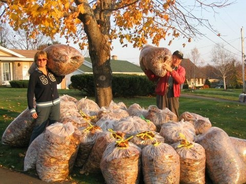

‘tis a month before Christmas!

Christmas 2004

Carol and Don at Cavendish Beach, November 2005

Janet and Don with leaves, November 2005
Greetings:
All are well.
Carol manages the household, paints, plays bridge and tends her flower gardens in the summer.
Don still pretends to be busy with genealogy, writing and volunteering.
Brian is with the Alma project of NRAO and has had a very busy travel schedule this year in the US as well as overseas; Marie is an IT specialist with NRAO as well; Lisa graduated from University and is working at Los Alamos; Laura is in her third year at UNM in Albuquerque.
Janet lives in Ottawa and works with the Canadian Transportation Agency. She travels quite a bit with her job but also travels extensively for pleasure.
We had a couple of visits from Brian and Janet during the past year and our granddaughter, Laura spent a couple of weeks with us last summer. We are fortunate to be able to travel and spent two months in Florida last winter and have plans to travel south again this year. Recently we joind a home exchange organization and have exchanged with folks from Toronto and Florida; we will be exchanging with a couple from Karlsruhe, Germany next summer. We also enjoy our summer cottage at the shore.
Warmest regards to all.
Carol and Don Glendenning